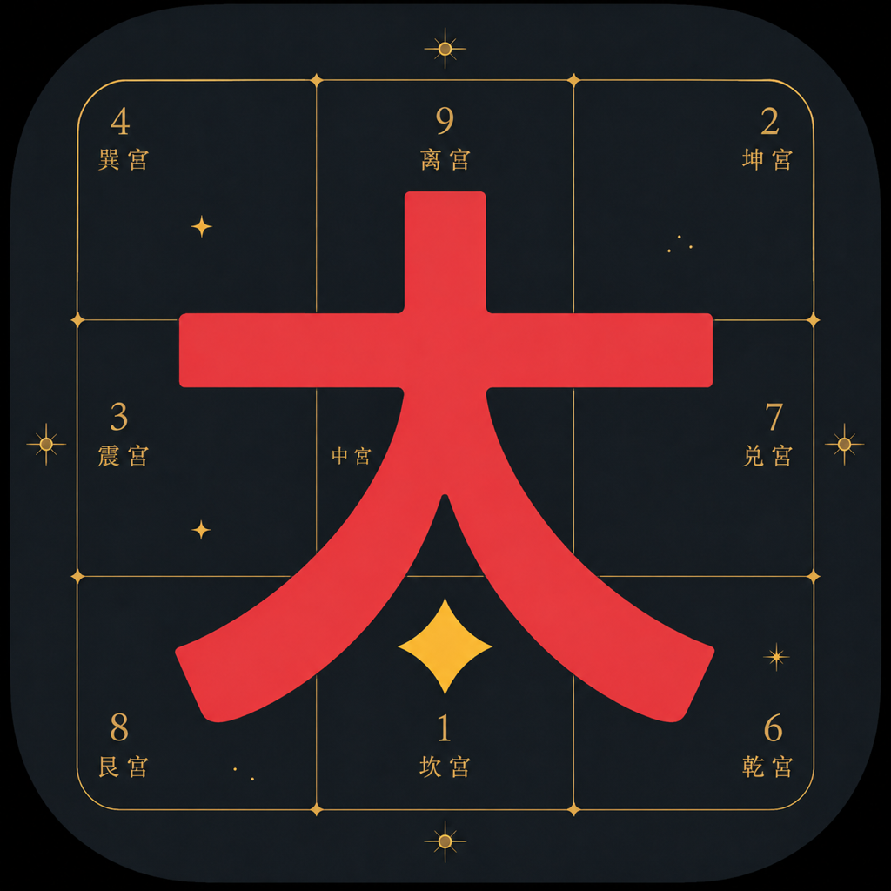

太公奇门排盘与转宫
十二宫转宫与卦例记录
太公奇门排盘与转宫是一款面向太公奇门学习者和研究者的工具，用于传统文化学习、记录和研究，不提供医疗、法律、投资等专业建议，也不承诺任何预测结果。
三种排盘视角
时空起局、八字起局与命理时空合参。以连续圆盘查看十二宫、八门、九星、八神和干支关系。
转宫与原局对照
沿外侧宫名环拖动切换观察视角，原宫名可同时对照；点选地支可联动查看柱间关系，点击归位恢复原局。
出生地真太阳时
按出生地经度、当地历史时区和夏令时换算，显示钟表时间、真太阳时和修正量。地点搜索需要联网，选定地点后的排盘可离线进行。
一局一记，留待回看
保存所问之事、分析断卦、盘面与转宫位置；历史可搜索、重开和补写。当前版本仅在本机保存，不提供应用内iCloud同步。